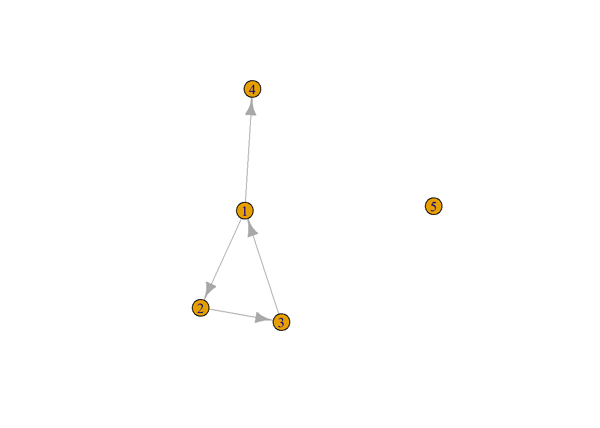
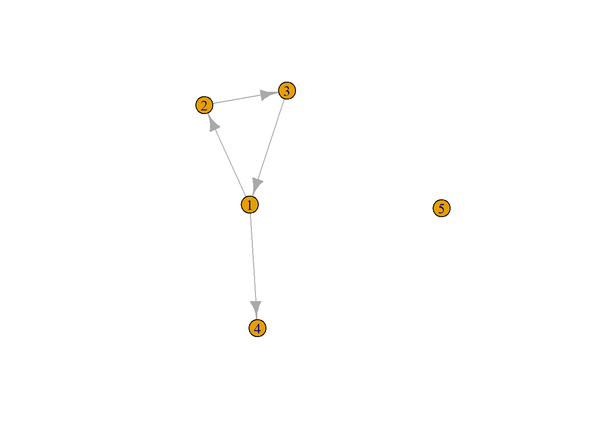
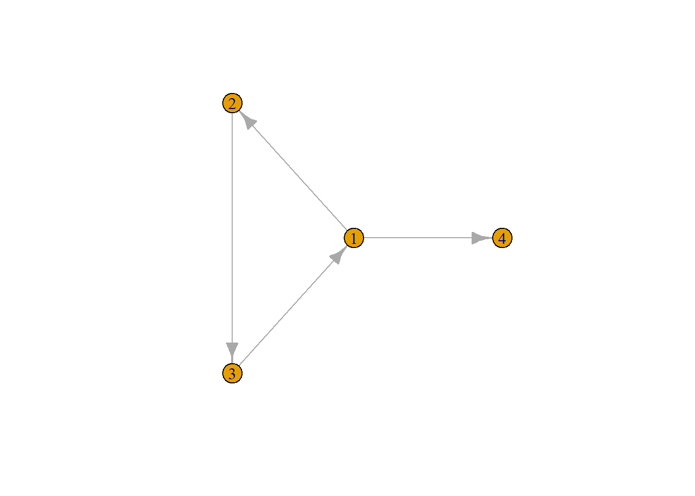
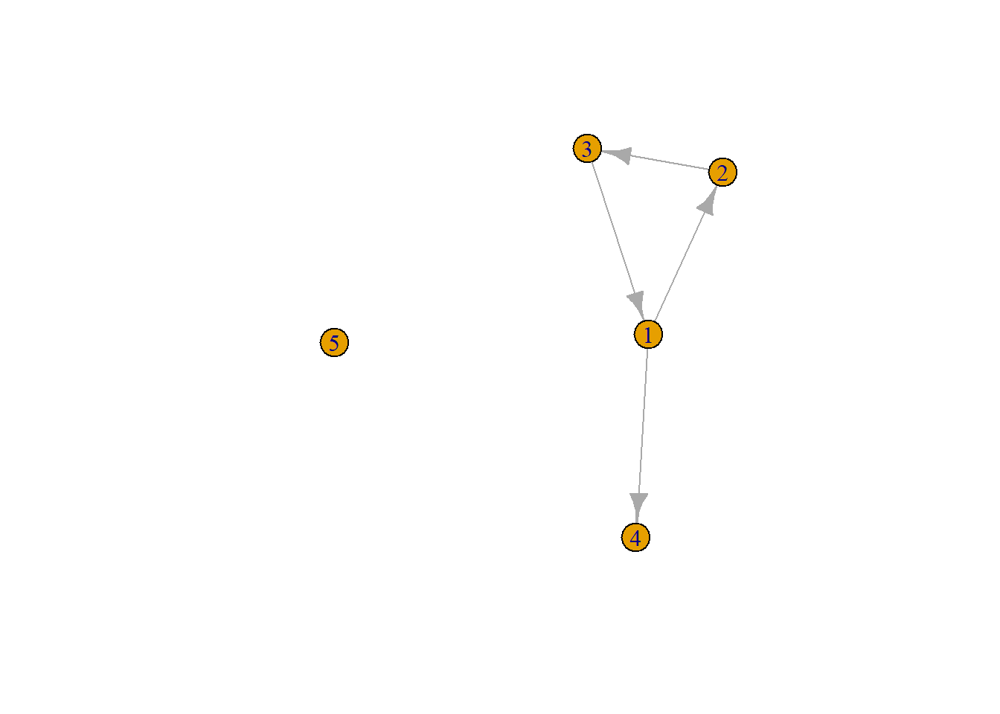
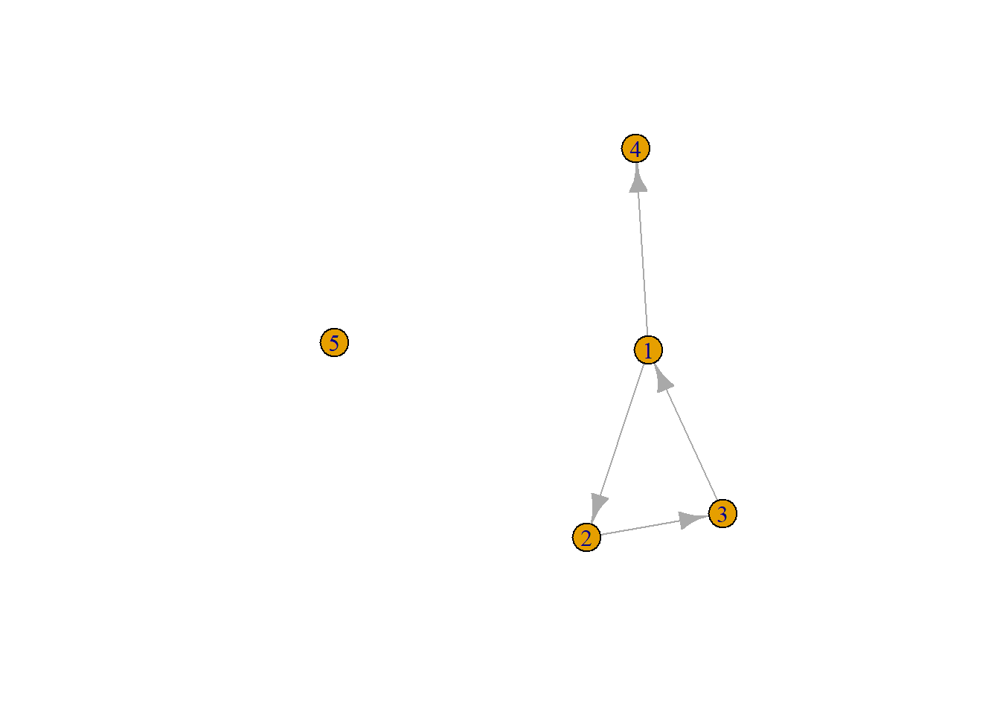
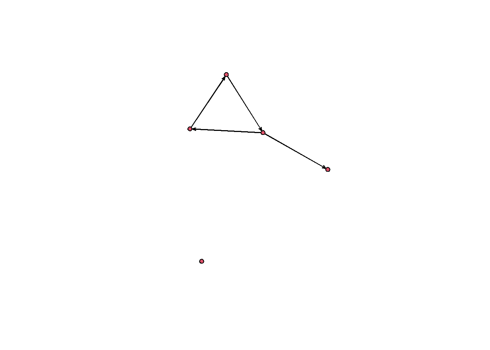
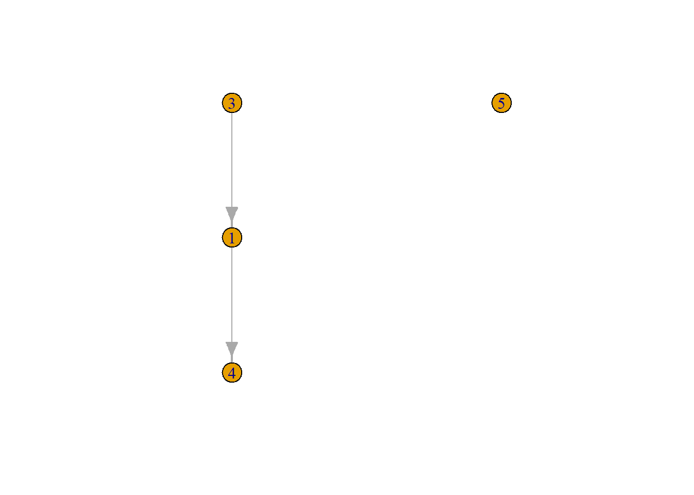
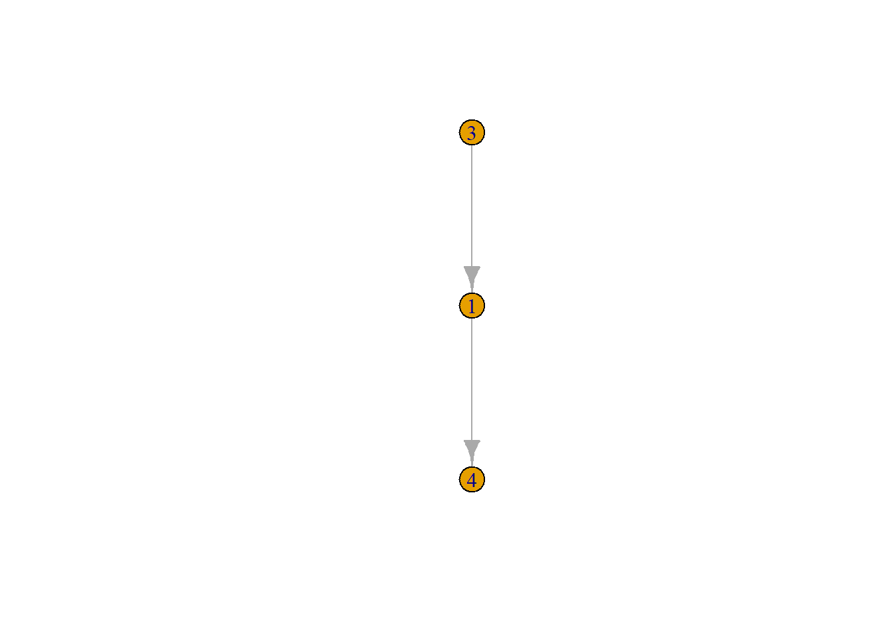
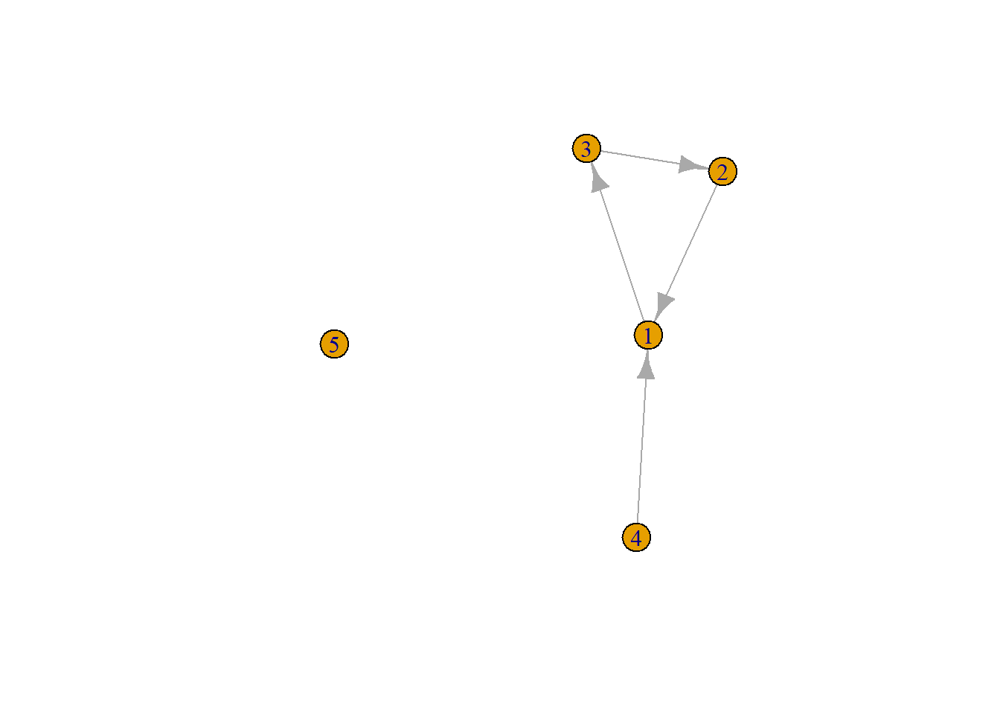
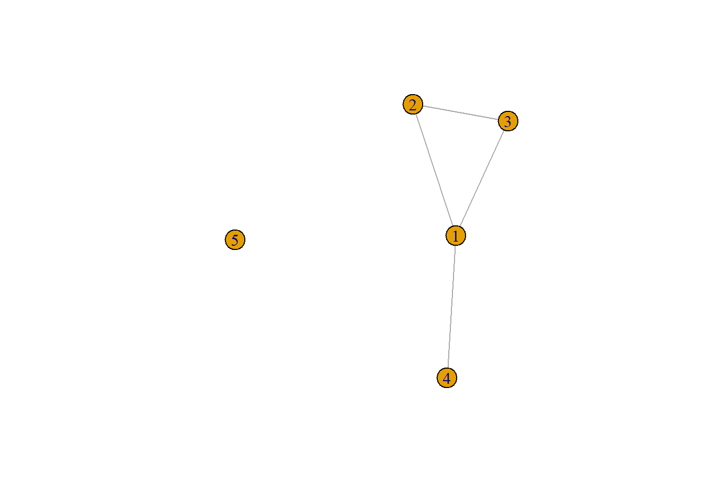

Last compiled on april, 2026
On this page you will find my code from the first computer lab.
1.1.1
url1 <- "https://github.com/rensec/sasr08/raw/main/g_adj_matrix_simple.csv"
g_matrix <- read.csv(file = url1, header = FALSE)
g_matrix
#> V1 V2 V3 V4 V5
#> 1 0 1 0 1 0
#> 2 0 0 1 0 0
#> 3 1 0 0 0 0
#> 4 0 0 0 0 0
#> 5 0 0 0 0 0
class(g_matrix)
#> [1] "data.frame"
g_matrix <- as.matrix(g_matrix)
g_matrix
#> V1 V2 V3 V4 V5
#> [1,] 0 1 0 1 0
#> [2,] 0 0 1 0 0
#> [3,] 1 0 0 0 0
#> [4,] 0 0 0 0 0
#> [5,] 0 0 0 0 0
rownames(g_matrix) <- 1:nrow(g_matrix)
colnames(g_matrix) <- 1:ncol(g_matrix)
g_matrix
#> 1 2 3 4 5
#> 1 0 1 0 1 0
#> 2 0 0 1 0 0
#> 3 1 0 0 0 0
#> 4 0 0 0 0 0
#> 5 0 0 0 0 0
Question: How many nodes are included in this matrix, and how many
edges are there between these nodes?
Answer: There are five nodes in this matrix and four edges.
g_nodes_age <- read.csv(file = "https://github.com/rensec/sasr08/raw/main/g_nodes_age.csv")
g_nodes_age
#> id age
#> 1 1 20
#> 2 2 21
#> 3 3 25
#> 4 4 NA
#> 5 5 21
g <- graph_from_adjacency_matrix(g_matrix)
class(g)
#> [1] "igraph"
g
#> IGRAPH b37cb83 DN-- 5 4 --
#> + attr: name (v/c)
#> + edges from b37cb83 (vertex names):
#> [1] 1->2 1->4 2->3 3->1
plot(g)

g <- set_vertex_attr(
g,
name = "age",
value = g_nodes_age$age
)
1.1.2
g_elist <- read.csv(file = "https://github.com/rensec/sasr08/raw/main/g_elist.csv")
g_elist
#> from to
#> 1 1 2
#> 2 2 3
#> 3 3 1
#> 4 1 4
g_from_elist <- graph_from_data_frame(g_elist)
plot(g_from_elist)
g_from_elist <- graph_from_data_frame(g_elist, vertices = g_nodes_age)
plot(g_from_elist)
Assignment: Edge list pipeline
From the code snippets above, construct a complete pipeline to go
from the edge list to the igraph object. Start from
g_elist. Plot the resulting network. Store the code
somewhere for later use.
g_from_elist <- graph_from_data_frame(
d = g_elist,
vertices = g_nodes_age
)
plot(g_from_elist)

1.1.3
g_adj_list <- read.csv(file = "https://github.com/rensec/sasr08/raw/main/g_adj_list.csv")
g_adj_list
#> id age friend1 friend2
#> 1 1 20 2 4
#> 2 2 21 3 NA
#> 3 3 25 1 NA
#> 4 4 NA NA NA
#> 5 5 21 NA NA
g_elist_from_alist <- g_adj_list
g_elist_from_alist <- g_adj_list %>%
select(id, friend1:friend2) %>%
melt(id.vars = "id")
g_adj_list %>%
select(id, friend1:friend2) %>%
pivot_longer(c(friend1, friend2))
#> # A tibble: 10 × 3
#> id name value
#> <int> <chr> <int>
#> 1 1 friend1 2
#> 2 1 friend2 4
#> 3 2 friend1 3
#> 4 2 friend2 NA
#> 5 3 friend1 1
#> 6 3 friend2 NA
#> 7 4 friend1 NA
#> 8 4 friend2 NA
#> 9 5 friend1 NA
#> 10 5 friend2 NA
g_elist_from_alist <- g_elist_from_alist %>%
filter(!is.na(value)) %>%
rename(from = "id", to = "value", sourcevar = "variable") %>%
relocate(to, .after = from)
g_elist_from_alist
#> from to sourcevar
#> 1 1 2 friend1
#> 2 2 3 friend1
#> 3 3 1 friend1
#> 4 1 4 friend2
Question: Besides being useful for data manipulation procedures,
keeping the information in sourcevar could also be
important for more substantive reasons. Can you think of such a
reason?
Answer: Seeing who is a more important friend.
g_from_alist <- graph_from_data_frame(g_elist_from_alist)
plot(g_from_alist)

nodelist <- select(g_adj_list, id, age)
g_from_alist <- graph_from_data_frame(
g_elist_from_alist,
vertices = nodelist
)
plot(g_from_alist)

Assignment: Adjacency list pipeline
From the code snippets above, construct a complete pipeline to go
from the adjacency list to the igraph object. Start from
g_adj_list. Plot the resulting network. Store the code for
later use.
g_from_alist <- graph_from_data_frame(
d = g_adj_list %>%
select(id, friend1:friend2) %>%
pivot_longer(c(friend1, friend2)) %>%
filter(!is.na(value)) %>%
rename(from = id, to = value, sourcevar = name) %>%
relocate(to, .after = from),
vertices = g_adj_list %>%
select(id, age),
directed = TRUE
)
plot(g_from_alist)

1.2.1
g_adj_matrix <- as_adjacency_matrix(g, sparse = FALSE)
g_adj_matrix
#> 1 2 3 4 5
#> 1 0 1 0 1 0
#> 2 0 0 1 0 0
#> 3 1 0 0 0 0
#> 4 0 0 0 0 0
#> 5 0 0 0 0 0
all(g_adj_matrix == g_matrix)
#> [1] TRUE
1.2.2
g_edgelist <- igraph::as_data_frame(g_from_elist, what = "edges")
g_edgelist
#> from to
#> 1 1 2
#> 2 2 3
#> 3 3 1
#> 4 1 4
igraph::as_data_frame(g_from_elist, what = "vertices")
#> name age
#> 1 1 20
#> 2 2 21
#> 3 3 25
#> 4 4 NA
#> 5 5 21
1.2.3
edgelist_2 <- igraph::as_data_frame(g_from_alist, what = "edges")
nodelist_2 <- igraph::as_data_frame(g_from_alist, what = "vertices")
d <- edgelist_2 %>%
rename(id = "from") %>%
pivot_wider(
id_cols = id,
names_from = sourcevar,
values_from = to
) %>%
merge(nodelist_2, by.x = "id", by.y = "name", all.y = TRUE) %>%
relocate(age, .after = id) %>%
type_convert()
d
#> id age friend1 friend2
#> 1 1 20 2 4
#> 2 2 21 3 NA
#> 3 3 25 1 NA
#> 4 4 NA NA NA
#> 5 5 21 NA NA
1.3
g_np <- as.network(
g_elist_from_alist,
matrix.type = "edgelist",
vertices = nodelist
)
g_np
#> Network attributes:
#> vertices = 5
#> directed = TRUE
#> hyper = FALSE
#> loops = FALSE
#> multiple = FALSE
#> bipartite = FALSE
#> total edges= 4
#> missing edges= 0
#> non-missing edges= 4
#>
#> Vertex attribute names:
#> age vertex.names
#>
#> Edge attribute names:
#> sourcevar
plot(g_np)

1.4
g_mod <- delete_vertices(g, 2)
plot(g_mod)

g_mod <- delete_vertices(g, which(V(g)$age == 21))
plot(g_mod)

Question
Write the code to remove all nodes from g for which age
is missing.
g_mod <- delete_vertices(g, which(is.na(V(g)$age)))
V(g)$gender <- c("male", "female", "female", "other", "male")
g
#> IGRAPH b37cb83 DN-- 5 4 --
#> + attr: name (v/c), age (v/n), gender (v/c)
#> + edges from b37cb83 (vertex names):
#> [1] 1->2 1->4 2->3 3->1
g_rev <- reverse_edges(g)
plot(g_rev)

g_union <- igraph::union(g, g_rev)
Question: Before you run plot(g_union), think about what
the resulting network should look like. Thus, what could you use the
combination of reverse_edges() and union()
for?
Answer: You can use this to make the network undirected.
g_undir <- as_undirected(g)
plot(g_undir)

Question: Realize however that, conceptually, g_union
and g_undir are different. What is the difference?
Answer: g_union goes both directions and
g_undir has no directions.
LS0tDQp0aXRsZTogIlR1dG9yaWFsIDE6IEhhbmRsaW5nIHNvY2lhbCBuZXR3b3JrIGRhdGEgaW4gUiINCmF1dGhvcjogIkJqYXJuZSB2YW4gZGVyIE1hcmsiDQpvdXRwdXQ6DQogIGh0bWxfZG9jdW1lbnQ6DQogICAgbnVtYmVyX3NlY3Rpb25zOiBmYWxzZQ0KLS0tDQoNCmBgYHtyLCBnbG9iYWxzZXR0aW5ncywgZWNobz1GQUxTRSwgd2FybmluZz1GQUxTRSwgcmVzdWx0cz0naGlkZScsIG1lc3NhZ2U9RkFMU0V9DQpsaWJyYXJ5KGtuaXRyKQ0KbGlicmFyeShpZ3JhcGgpDQpsaWJyYXJ5KGRwbHlyKQ0KbGlicmFyeShyZXNoYXBlMikNCmxpYnJhcnkodGlkeXZlcnNlKQ0KbGlicmFyeShuZXR3b3JrKQ0KDQprbml0cjo6b3B0c19jaHVuayRzZXQoDQogIGVjaG8gPSBUUlVFLA0KICB0aWR5Lm9wdHMgPSBsaXN0KHdpZHRoLmN1dG9mZiA9IDEwMCksDQogIHRpZHkgPSBUUlVFLA0KICB3YXJuaW5nID0gRkFMU0UsDQogIG1lc3NhZ2UgPSBGQUxTRSwNCiAgY29tbWVudCA9ICIjPiIsDQogIGNhY2hlID0gVFJVRSwNCiAgY2xhc3Muc291cmNlID0gYygidGVzdCIpLA0KICBjbGFzcy5vdXRwdXQgPSBjKCJ0ZXN0MiIpDQopDQoNCm9wdGlvbnMod2lkdGggPSAxMDApDQpyZ2w6OnNldHVwS25pdHIoKQ0KDQpjb2xvcml6ZSA8LSBmdW5jdGlvbih4LCBjb2xvcikgew0KICBzcHJpbnRmKCI8c3BhbiBzdHlsZT0nY29sb3I6ICVzOyc+JXM8L3NwYW4+IiwgY29sb3IsIHgpDQp9DQpgYGANCg0KYGBge3Iga2xpcHB5LCBlY2hvPUZBTFNFLCBpbmNsdWRlPVRSVUV9DQojIGtsaXBweTo6a2xpcHB5KHBvc2l0aW9uID0gYygndG9wJywgJ3JpZ2h0JykpDQojIGtsaXBweTo6a2xpcHB5KGNvbG9yID0gJ2RhcmtyZWQnKQ0KIyBrbGlwcHk6OmtsaXBweSh0b29sdGlwX21lc3NhZ2UgPSAnQ2xpY2sgdG8gY29weScsIHRvb2x0aXBfc3VjY2VzcyA9ICdEb25lJykNCmBgYA0KDQpMYXN0IGNvbXBpbGVkIG9uIGByIGZvcm1hdChTeXMudGltZSgpLCAnJUIsICVZJylgDQoNCk9uIHRoaXMgcGFnZSB5b3Ugd2lsbCBmaW5kIG15IGNvZGUgZnJvbSB0aGUgZmlyc3QgY29tcHV0ZXIgbGFiLg0KDQojIyAxLjEuMQ0KDQpgYGB7cn0NCnVybDEgPC0gImh0dHBzOi8vZ2l0aHViLmNvbS9yZW5zZWMvc2FzcjA4L3Jhdy9tYWluL2dfYWRqX21hdHJpeF9zaW1wbGUuY3N2Ig0KZ19tYXRyaXggPC0gcmVhZC5jc3YoZmlsZSA9IHVybDEsIGhlYWRlciA9IEZBTFNFKQ0KZ19tYXRyaXgNCg0KY2xhc3MoZ19tYXRyaXgpDQoNCmdfbWF0cml4IDwtIGFzLm1hdHJpeChnX21hdHJpeCkNCmdfbWF0cml4DQoNCnJvd25hbWVzKGdfbWF0cml4KSA8LSAxOm5yb3coZ19tYXRyaXgpDQpjb2xuYW1lcyhnX21hdHJpeCkgPC0gMTpuY29sKGdfbWF0cml4KQ0KZ19tYXRyaXgNCmBgYA0KDQpRdWVzdGlvbjogSG93IG1hbnkgbm9kZXMgYXJlIGluY2x1ZGVkIGluIHRoaXMgbWF0cml4LCBhbmQgaG93IG1hbnkgZWRnZXMgYXJlIHRoZXJlIGJldHdlZW4gdGhlc2Ugbm9kZXM/DQoNCkFuc3dlcjogVGhlcmUgYXJlIGZpdmUgbm9kZXMgaW4gdGhpcyBtYXRyaXggYW5kIGZvdXIgZWRnZXMuDQoNCmBgYHtyfQ0KZ19ub2Rlc19hZ2UgPC0gcmVhZC5jc3YoZmlsZSA9ICJodHRwczovL2dpdGh1Yi5jb20vcmVuc2VjL3Nhc3IwOC9yYXcvbWFpbi9nX25vZGVzX2FnZS5jc3YiKQ0KZ19ub2Rlc19hZ2UNCg0KZyA8LSBncmFwaF9mcm9tX2FkamFjZW5jeV9tYXRyaXgoZ19tYXRyaXgpDQpjbGFzcyhnKQ0KZw0KDQpwbG90KGcpDQoNCmcgPC0gc2V0X3ZlcnRleF9hdHRyKA0KICBnLA0KICBuYW1lID0gImFnZSIsDQogIHZhbHVlID0gZ19ub2Rlc19hZ2UkYWdlDQopDQpgYGANCg0KIyMgMS4xLjINCg0KYGBge3J9DQpnX2VsaXN0IDwtIHJlYWQuY3N2KGZpbGUgPSAiaHR0cHM6Ly9naXRodWIuY29tL3JlbnNlYy9zYXNyMDgvcmF3L21haW4vZ19lbGlzdC5jc3YiKQ0KZ19lbGlzdA0KDQpnX2Zyb21fZWxpc3QgPC0gZ3JhcGhfZnJvbV9kYXRhX2ZyYW1lKGdfZWxpc3QpDQpwbG90KGdfZnJvbV9lbGlzdCkNCg0KZ19mcm9tX2VsaXN0IDwtIGdyYXBoX2Zyb21fZGF0YV9mcmFtZShnX2VsaXN0LCB2ZXJ0aWNlcyA9IGdfbm9kZXNfYWdlKQ0KcGxvdChnX2Zyb21fZWxpc3QpDQpgYGANCg0KIyMjIEFzc2lnbm1lbnQ6IEVkZ2UgbGlzdCBwaXBlbGluZQ0KDQpGcm9tIHRoZSBjb2RlIHNuaXBwZXRzIGFib3ZlLCBjb25zdHJ1Y3QgYSBjb21wbGV0ZSBwaXBlbGluZSB0byBnbyBmcm9tIHRoZSBlZGdlIGxpc3QgdG8gdGhlIGlncmFwaCBvYmplY3QuIFN0YXJ0IGZyb20gYGdfZWxpc3RgLiBQbG90IHRoZSByZXN1bHRpbmcgbmV0d29yay4gU3RvcmUgdGhlIGNvZGUgc29tZXdoZXJlIGZvciBsYXRlciB1c2UuDQoNCmBgYHtyfQ0KZ19mcm9tX2VsaXN0IDwtIGdyYXBoX2Zyb21fZGF0YV9mcmFtZSgNCiAgZCA9IGdfZWxpc3QsDQogIHZlcnRpY2VzID0gZ19ub2Rlc19hZ2UNCikNCg0KcGxvdChnX2Zyb21fZWxpc3QpDQpgYGANCg0KIyMgMS4xLjMNCg0KYGBge3J9DQpnX2Fkal9saXN0IDwtIHJlYWQuY3N2KGZpbGUgPSAiaHR0cHM6Ly9naXRodWIuY29tL3JlbnNlYy9zYXNyMDgvcmF3L21haW4vZ19hZGpfbGlzdC5jc3YiKQ0KZ19hZGpfbGlzdA0KDQpnX2VsaXN0X2Zyb21fYWxpc3QgPC0gZ19hZGpfbGlzdA0KDQpnX2VsaXN0X2Zyb21fYWxpc3QgPC0gZ19hZGpfbGlzdCAlPiUNCiAgc2VsZWN0KGlkLCBmcmllbmQxOmZyaWVuZDIpICU+JQ0KICBtZWx0KGlkLnZhcnMgPSAiaWQiKQ0KDQpnX2Fkal9saXN0ICU+JQ0KICBzZWxlY3QoaWQsIGZyaWVuZDE6ZnJpZW5kMikgJT4lDQogIHBpdm90X2xvbmdlcihjKGZyaWVuZDEsIGZyaWVuZDIpKQ0KDQpnX2VsaXN0X2Zyb21fYWxpc3QgPC0gZ19lbGlzdF9mcm9tX2FsaXN0ICU+JQ0KICBmaWx0ZXIoIWlzLm5hKHZhbHVlKSkgJT4lDQogIHJlbmFtZShmcm9tID0gImlkIiwgdG8gPSAidmFsdWUiLCBzb3VyY2V2YXIgPSAidmFyaWFibGUiKSAlPiUNCiAgcmVsb2NhdGUodG8sIC5hZnRlciA9IGZyb20pDQoNCmdfZWxpc3RfZnJvbV9hbGlzdA0KYGBgDQoNClF1ZXN0aW9uOiBCZXNpZGVzIGJlaW5nIHVzZWZ1bCBmb3IgZGF0YSBtYW5pcHVsYXRpb24gcHJvY2VkdXJlcywga2VlcGluZyB0aGUgaW5mb3JtYXRpb24gaW4gYHNvdXJjZXZhcmAgY291bGQgYWxzbyBiZSBpbXBvcnRhbnQgZm9yIG1vcmUgc3Vic3RhbnRpdmUgcmVhc29ucy4gQ2FuIHlvdSB0aGluayBvZiBzdWNoIGEgcmVhc29uPw0KDQpBbnN3ZXI6IFNlZWluZyB3aG8gaXMgYSBtb3JlIGltcG9ydGFudCBmcmllbmQuDQoNCmBgYHtyfQ0KZ19mcm9tX2FsaXN0IDwtIGdyYXBoX2Zyb21fZGF0YV9mcmFtZShnX2VsaXN0X2Zyb21fYWxpc3QpDQpwbG90KGdfZnJvbV9hbGlzdCkNCg0Kbm9kZWxpc3QgPC0gc2VsZWN0KGdfYWRqX2xpc3QsIGlkLCBhZ2UpDQoNCmdfZnJvbV9hbGlzdCA8LSBncmFwaF9mcm9tX2RhdGFfZnJhbWUoDQogIGdfZWxpc3RfZnJvbV9hbGlzdCwNCiAgdmVydGljZXMgPSBub2RlbGlzdA0KKQ0KDQpwbG90KGdfZnJvbV9hbGlzdCkNCmBgYA0KDQojIyMgQXNzaWdubWVudDogQWRqYWNlbmN5IGxpc3QgcGlwZWxpbmUNCg0KRnJvbSB0aGUgY29kZSBzbmlwcGV0cyBhYm92ZSwgY29uc3RydWN0IGEgY29tcGxldGUgcGlwZWxpbmUgdG8gZ28gZnJvbSB0aGUgYWRqYWNlbmN5IGxpc3QgdG8gdGhlIGlncmFwaCBvYmplY3QuIFN0YXJ0IGZyb20gYGdfYWRqX2xpc3RgLiBQbG90IHRoZSByZXN1bHRpbmcgbmV0d29yay4gU3RvcmUgdGhlIGNvZGUgZm9yIGxhdGVyIHVzZS4NCg0KYGBge3J9DQpnX2Zyb21fYWxpc3QgPC0gZ3JhcGhfZnJvbV9kYXRhX2ZyYW1lKA0KICBkID0gZ19hZGpfbGlzdCAlPiUNCiAgICBzZWxlY3QoaWQsIGZyaWVuZDE6ZnJpZW5kMikgJT4lDQogICAgcGl2b3RfbG9uZ2VyKGMoZnJpZW5kMSwgZnJpZW5kMikpICU+JQ0KICAgIGZpbHRlcighaXMubmEodmFsdWUpKSAlPiUNCiAgICByZW5hbWUoZnJvbSA9IGlkLCB0byA9IHZhbHVlLCBzb3VyY2V2YXIgPSBuYW1lKSAlPiUNCiAgICByZWxvY2F0ZSh0bywgLmFmdGVyID0gZnJvbSksDQogIA0KICB2ZXJ0aWNlcyA9IGdfYWRqX2xpc3QgJT4lDQogICAgc2VsZWN0KGlkLCBhZ2UpLA0KICANCiAgZGlyZWN0ZWQgPSBUUlVFDQopDQoNCnBsb3QoZ19mcm9tX2FsaXN0KQ0KYGBgDQoNCiMjIDEuMi4xDQoNCmBgYHtyfQ0KZ19hZGpfbWF0cml4IDwtIGFzX2FkamFjZW5jeV9tYXRyaXgoZywgc3BhcnNlID0gRkFMU0UpDQpnX2Fkal9tYXRyaXgNCg0KYWxsKGdfYWRqX21hdHJpeCA9PSBnX21hdHJpeCkNCmBgYA0KDQojIyAxLjIuMg0KDQpgYGB7cn0NCmdfZWRnZWxpc3QgPC0gaWdyYXBoOjphc19kYXRhX2ZyYW1lKGdfZnJvbV9lbGlzdCwgd2hhdCA9ICJlZGdlcyIpDQpnX2VkZ2VsaXN0DQoNCmlncmFwaDo6YXNfZGF0YV9mcmFtZShnX2Zyb21fZWxpc3QsIHdoYXQgPSAidmVydGljZXMiKQ0KYGBgDQoNCiMjIDEuMi4zDQoNCmBgYHtyfQ0KZWRnZWxpc3RfMiA8LSBpZ3JhcGg6OmFzX2RhdGFfZnJhbWUoZ19mcm9tX2FsaXN0LCB3aGF0ID0gImVkZ2VzIikNCm5vZGVsaXN0XzIgPC0gaWdyYXBoOjphc19kYXRhX2ZyYW1lKGdfZnJvbV9hbGlzdCwgd2hhdCA9ICJ2ZXJ0aWNlcyIpDQoNCmQgPC0gZWRnZWxpc3RfMiAlPiUNCiAgcmVuYW1lKGlkID0gImZyb20iKSAlPiUNCiAgcGl2b3Rfd2lkZXIoDQogICAgaWRfY29scyA9IGlkLA0KICAgIG5hbWVzX2Zyb20gPSBzb3VyY2V2YXIsDQogICAgdmFsdWVzX2Zyb20gPSB0bw0KICApICU+JQ0KICBtZXJnZShub2RlbGlzdF8yLCBieS54ID0gImlkIiwgYnkueSA9ICJuYW1lIiwgYWxsLnkgPSBUUlVFKSAlPiUNCiAgcmVsb2NhdGUoYWdlLCAuYWZ0ZXIgPSBpZCkgJT4lDQogIHR5cGVfY29udmVydCgpDQoNCmQNCmBgYA0KDQojIyAxLjMNCg0KYGBge3J9DQpnX25wIDwtIGFzLm5ldHdvcmsoDQogIGdfZWxpc3RfZnJvbV9hbGlzdCwNCiAgbWF0cml4LnR5cGUgPSAiZWRnZWxpc3QiLA0KICB2ZXJ0aWNlcyA9IG5vZGVsaXN0DQopDQoNCmdfbnANCg0KcGxvdChnX25wKQ0KYGBgDQoNCiMjIDEuNA0KDQpgYGB7cn0NCmdfbW9kIDwtIGRlbGV0ZV92ZXJ0aWNlcyhnLCAyKQ0KcGxvdChnX21vZCkNCg0KZ19tb2QgPC0gZGVsZXRlX3ZlcnRpY2VzKGcsIHdoaWNoKFYoZykkYWdlID09IDIxKSkNCnBsb3QoZ19tb2QpDQpgYGANCg0KIyMjIFF1ZXN0aW9uDQoNCldyaXRlIHRoZSBjb2RlIHRvIHJlbW92ZSBhbGwgbm9kZXMgZnJvbSBgZ2AgZm9yIHdoaWNoIGFnZSBpcyBtaXNzaW5nLg0KDQpgYGB7cn0NCmdfbW9kIDwtIGRlbGV0ZV92ZXJ0aWNlcyhnLCB3aGljaChpcy5uYShWKGcpJGFnZSkpKQ0KYGBgDQoNCmBgYHtyfQ0KVihnKSRnZW5kZXIgPC0gYygibWFsZSIsICJmZW1hbGUiLCAiZmVtYWxlIiwgIm90aGVyIiwgIm1hbGUiKQ0KZw0KDQpnX3JldiA8LSByZXZlcnNlX2VkZ2VzKGcpDQpwbG90KGdfcmV2KQ0KDQpnX3VuaW9uIDwtIGlncmFwaDo6dW5pb24oZywgZ19yZXYpDQpgYGANCg0KUXVlc3Rpb246IEJlZm9yZSB5b3UgcnVuIGBwbG90KGdfdW5pb24pYCwgdGhpbmsgYWJvdXQgd2hhdCB0aGUgcmVzdWx0aW5nIG5ldHdvcmsgc2hvdWxkIGxvb2sgbGlrZS4gVGh1cywgd2hhdCBjb3VsZCB5b3UgdXNlIHRoZSBjb21iaW5hdGlvbiBvZiBgcmV2ZXJzZV9lZGdlcygpYCBhbmQgYHVuaW9uKClgIGZvcj8NCg0KQW5zd2VyOiBZb3UgY2FuIHVzZSB0aGlzIHRvIG1ha2UgdGhlIG5ldHdvcmsgdW5kaXJlY3RlZC4NCg0KYGBge3J9DQpnX3VuZGlyIDwtIGFzX3VuZGlyZWN0ZWQoZykNCnBsb3QoZ191bmRpcikNCmBgYA0KDQpRdWVzdGlvbjogUmVhbGl6ZSBob3dldmVyIHRoYXQsIGNvbmNlcHR1YWxseSwgYGdfdW5pb25gIGFuZCBgZ191bmRpcmAgYXJlIGRpZmZlcmVudC4gV2hhdCBpcyB0aGUgZGlmZmVyZW5jZT8NCg0KQW5zd2VyOiBgZ191bmlvbmAgZ29lcyBib3RoIGRpcmVjdGlvbnMgYW5kIGBnX3VuZGlyYCBoYXMgbm8gZGlyZWN0aW9ucy4=